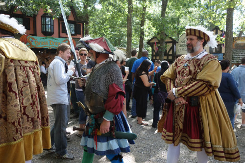

Greetings from English Now!

Welcome to ENcompass, which provides information and ideas to English Now! friends and family around the world. Whether you were a student with us years ago or you are a friend in the Washington, D.C., international community, it brings us joy to reach out to you today.
We are not a large school, but we take a special approach to language education. ENcompass is our effort to reach out a bit more broadly than ever before. We hope you enjoy these articles. If you are an alumni now back in your home country, you can also "see" some of the school in photos, or you may enjoy a short video of our school (see here) or of our classes (see here).
By the way, we call this "ENcompass" because one of the meanings of the word "encompass" is "to include a wide range of ideas." English Now! is a special place because we welcome people from many nations, cultures, and languages. We all grow through the experience. We thank you for your part in the English Now! story and are glad to be with you!
In addition to the articles below, please see here for great ideas and information from past issues of ENcompass.
Warmest Regards -
Paul Boesen
Places We Recommend for a Day or a Weekend…Charlottesville, Virginia

Students often ask us about things to do outside of Washington, D.C. We are very happy to share a description of one of our favorite nearby destinations! Please also ask at our reception desk for more information about Charlottesville and Monticello next time you are at the school.
Charlottesville is a small city located approximately two hours from Bethesda. It is best known for its historic sites, such as Thomas Jefferson's home at Monticello, as well as the university he created, the beautiful University of Virginia. Take a walk among the classically Virginian architecture of the university and see a great example of an American “college town.” Nearby, you can also a walking tour of downtown Charlottesville and visit other early-American historic sites.
Monticello is a great place to learn about early American history, the culture of colonial Virginia and the early republic, and one of America’s most famous Presidents. This is also a great place to learn about the American South, including the tragic story of slavery that eventually led to our Civil War. Jefferson’s home has been beautifully preserved, and guided tours are convenient and accessible. Note: you must purchase tickets to tour Monticello. For more information on Monticello or Jefferson, or to purchase tickets, visit the Monticello website.
Yet there is more than just history to enjoy here. Charlottesville has developed a rich arts and entertainment scene, especially when it comes to live music. You can hear music in clubs, theaters, and on the street. In addition, many good restaurants line the quaint streets downtown. The Charlottesville Historic Downtown Mall is the place to go. A short walk from the University of Virginia’s campus, the Mall offers many arts, entertainment, and restaurant options. You can even go ice skating at an indoor city ice rink on the Mall, in the winter!
Beyond the city of Charlottesville, miles and miles of undeveloped rural forest and fields are dotted with quaint pockets of rural life. So take a drive along the scenic and gentle roads that wind over hills and low mountains, opening suddenly on to beautiful views. You may even want to drive part. If you like to get moving outdoors, you can kayak the James or Rivanna Rivers, hike wilderness trails, or bike long trails and quiet country roads where farmers are harvesting crops in fields that have been worked by their families for generations.
There are also many orchards along those roads, in the summer you can pick strawberries, cherries, and peaches. In the autumn, there are shiny and juicy apples waiting to be picked. Finally, speaking of fruit, enjoy tours and tastings at more than 20 vineyards along the Monticello Wine Trail, and the area's award-winning small-batch beer breweries that make up the Brew Ridge Trail.
Please let us know if you are traveling to Charlottesville. We'd love to hear how your trip goes, and if you have recommendations for other students and their families!
Spotlight on a Student: My First Year in the United States, by Ioanna Galani

Note: we were fortunate to meet and have the chance to work with a wonderful student from Greece named Ioanna Galani when she arrived in the U.S. late last year. These words are entirely her own. We share them as wonderful testimony to the experiences that so many of our students have in the U.S.
My story starts in the beginning of October 2014 when I first came in the United States from Greece. It was an unexpected chance, but I took it without a second thought. I am nineteen years old and as you understand that encouraged me to come to the land of opportunity. I did not know what I will do here or how is life in the United States, so I had so many questions going through my mind about if I am going to make it or not.
Usually when you go to a new country the first months are like a honeymoon because you fall in love with everything, such as culture, sights and food. The first months that I was here it was a cultural shock. So, I said to myself that I am big girl and I should think about what I need to do with my future. First of all, I felt the need for communication, which was impeded due to the lack of fluency in the English language. I have studied English back in Greece, but when you actually live in the United States you realize that you are not fluent enough to communicate effectively. As a result, I found English Now!, which was a school not only to improve your English, but also to meet new people from all over the world and learn things about the country that you live in. This period I felt really blessed that I was there. My verbal communication improved a lot, I met professors eager to learn about me and I also socialized.
After several months l left from English Now! and I decided to go to the Montgomery College. It was a very stressful period in my life because I was trying to figure out for what classes I need to register for and how the college works. The Spring Semester began in January and I was ready to see how college in the United States was. In the beginning, I was worried, but after some weeks I felt comfortable with everything. I found some people to hang out with in the college and at the same time I was thinking what my major will be and to what university I want to transfer. Furthermore, in Greece I was an athlete and I decided to play for the college women's volleyball team and hopefully for the university women's volleyball team that I would like to transfer.
Moreover, I was searching about a volunteer job because I thought that it would be beneficial for my resume for the university. One day in the college there was a volunteer fair and I heard about a volunteer job that was very interesting. It was a program, which was called ''Girls on the run'' and very soon I contacted them to go and coach those girls. This program offered me the chance to view another aspect of myself. It wasn't about only running, it was about who you are, what habits, values and beliefs you should establish and to know to appreciate yourself and the others. As a coach of those girls I didn’t have the responsibility only to teach how to run but also I had to successfully convey to them those important values. It wasn’t easy…Girls in this age have a lot of questions. Although the questions seemed simple, surprisingly I had to find out a multidimensional answer.
The Spring Semester finished up, I got excellent grades, the girls ran and did their best and it was time to start taking the courses that were related to my major. My major was Kinesiology and during the first summer session I took Math and Biology. I had a hard time because the summer session was accelerated and I didn’t have the best foundation for those courses. I was feeling stressed during this period, and the only thing that I did it was studying because I was trying to catch up with the rest of the class. After this, I decided to change my major to Psychology, which I truly like. I had taken some classes in high school that were relevant to my field of studies. To be honest, I was never really excited about Kinesiology, yet I wanted to try it before I rejected it. Psychology is a field that offers you the chance to apply psychology to real life. In other words, you are able to use psychological concepts to interpret human experience. Second, another requirement of Psychology is the continuous research which helps you have a deeper understanding not only about the people around, but also of yourself. Furthermore, it is not a major that restricts you to study only Psychology, but provides you a broad connection with other fields, such as Communication. So, I feel satisfied with my decision to study Psychology and the classes that I am taking right now in the college are really interesting.
After the end of the first summer session the summer began. I missed my family back in Greece, but at the same time I was excited that I had the chance to be here. I think the majority of people who live and study in other countries have the same feelings. My summer, it was nice. I had the opportunity to rest a little bit and to discover things on my own. Moreover, I took the chance to improve more in volleyball as almost every day I had practice. However, volleyball for me is much more than a sport. . I love to play volleyball and it is an integral part of my daily life. I believe that sports and for me volleyball, drives you to hold your own, to realize that you should become responsible, honest, independent and self-reliant in order to deal with your problems and find solutions. I’ve been through many difficult moments due to injuries and personal problems, but volleyball was always there for me and it was an important reminder of what kind of person I want to be.
The summer seemed short and the Fall Semester started. My schedule is really tight, I have four classes, yet I chose to continue playing volleyball in the Montgomery College Women’s Volleyball Team. I do not regret that I still play volleyball because I want to combine my studies with sports and someday play at the university level.
Right now is September 20th and I am in the process of studying, practicing and doing the best that I can to transfer to a four-year-university. I understand that is not easy but I am more than eager to fulfill this dream. Coming to the United States, I met a different world with so many opportunities to be highly educated and to do what you really desire. However, there is a lot of competition and many difficulties that consciously or unconsciously lead you to strengthen yourself.
In conclusion, I strongly believe that if you want to achieve something you should not be affected by external factors and you should adjust yourself to the reality. I am still young and the only thing that I can express with certainty is that I will keep fighting for my dreams. This is what everybody should do!
Welcome to Our International Cookbook!

We enjoy sharing a meal together once a month, at our potluck lunches. Our monthly potluck lunch, on the second Thursday of each Intensive English Program term, is consistently one of our students' most enjoyable experiences. Sharing a meal is a special experience, for all peoples and in all cultures.
As a small part of this experience, we also enjoy sharing great recipes with each other and - onour online International Cookbook - with you. Please try one of these dishes, and we inviteadditional suggestions about great food from around the world: submit your ownrecipe! Please contact us for information about how to submit a recipe.
Spotlight on a Student
Recently, students in Linda La Pierre's Conversation Plus class were asked to write about their "most memorable lie" form childhood. One student, Sophie from France, shared this story with the class, and we loved it so much that we asked her if we could also publish it in ENcompass. Enjoy!
"Frankly, I don’t remember telling a big lie when I was a child. I have just an anecdote: I was learning to read and write, and I was fascinated by the number “2”. It’s a nice design, with a curve and a straight line. I drew it everywhere.
One day, I was in my grandparents’ bedroom – a lovely bedroom with champagne-colored wallpaper, with very fine velvet stripes. I saw on the bedside table a beautiful red marker. It was there apparently to train to write a nice “2” in red on the champagne-colored wall!
My grandfather asked me, “What’s that?” I guessed that the answer “a beautiful ‘2’ “ was not the right answer. So, I improvised an explanation:
“I was drawing a “2” on a piece of paper when my brother arrived. I put the paper on the wall so he wouldn’t see it, and the red ink rubbed off on the wall.”
The problem was that “at the reconstruction of the events,” the ink never rubbed off!
Strangely, I don't remember a punishment."
Spotlight on a Teacher

Interview with English Now! Teacher, Marian DeAngelo
You have been a dedicated teacher with English Now! for four years. What is your favorite part of being a teacher?
I enjoy having the opportunity to meet people from various parts of the word and learn about cultures and interact with them to find out how similar everyone really is in so many ways. Being a teacher here is unique. English Now! provides the opportunity to be creative and open sand small classes give you an intimate relationship with students. That’s way I love about being here. The students are here because they want to be here. It’s fun to work with enthusiastic and motivated students.
How did you decide that you wanted to be a teacher?
Some of my past summer jobs were at camps – teaching nature – I always a love for teaching. I got laid off from a corporate job. I started subbing. If I could handle being a substitute, then I knew I could do it. I survived the substitute world and when I moved to San Diego I went back to school for my teaching certificate. I taught fifth grade and I I had to plan my lessons so that my Spanish-speaking students could understand. Part of my training was teaching ESL and I had to learn how to reach students whose first language wasn’t English.
What was it like teaching in Germany?
In Germany I taught adults and I LOVED it. It was in a business setting and the students came to me because they wanted to learn English. Students were so personable and I became friends with many of them. As the years progressed, I also started teaching German kids in a neighborhood school who really wanted to improve their English. I had a great experience with those young students, some of whom have visited me in the U.S.. I would definitely go back to Germany again - I loved it so much.
You are an avid traveler. What is your favorite destination in the United States?
It’s hard to pinpoint because there are so many fantastic, beautiful places in the U.S. My favorite vacations have been to Alaska and to Bryce and Zion in Utah. My two favorites states are Oregon and Vermont.
In addition to teaching people, you also teach dogs! How did you get started in that work?
My interest in language relates to my work with my dogs – it’s all about making an association between a word and an action. For example, sometimes I use English and sometimes I use German, when I want them to do a backwards circle on the left, I use the German word for back, “hinter”, and I want them to go on the right side I use English and say “backwards circle”.
After getting our dogs, Mario and Bella, we thought – let’s really work with these dogs and train them to have good manners. So, I started focusing on obedience. Then I was working with a trainer who recognized that Mario and Bella had special abilities. She suggested that I work with another trainer who taught tricks. The trainer’s program was called Mutts Gone Nuts. From then on I was hooked. After a year of training with Mutts Gone Nuts, I was asked to join him for shows. After a year of that, I decided to start contacting senior centers to do shows for the elderly.
How can we meet your dogs, Mario and Bella?
If you’re interested in seeing Mario and Bella perform, there’s an upcoming show – The Leesburg Animal Park on Sunday, October 4 at 1:00 p.m. The show is called Jacks and Jokers.
More Things to Do in the Fall…Maryland Farms & Farm Festivals
This is a great activity for international residents of the U.S. or visitors, in the fall!
Visiting a farm is a wonderful autumn tradition in the U.S. If you want to drive further, Virginia has delightful farm festivals in the beautiful foothills of the Blue Ridge Mountains. But there are plenty of good ones right here in Maryland. Pick apples and pumpkins, drink cider, slide down a hill on a sack, get lost in a “corn maze”, and enjoy the crisp autumn air!
Homestead Farm
Where: 15604 Sugarland Road, Poolesville, Maryland 20837 (19 miles)
When: Until October 31, open seven days per week, “pick-your-own” 9am-5pm, market 9am-6pm
Admission: No admission, pay for fruit you pick or buy at the market
The closest farm to Bethesda, this is a great destination for apple picking or – in October – to find a pumpkin for Halloween. This is a family-owned farm offering pick-your-own fruits, berries, vegetables, but note that it does not have activities, rides, or festivals like some of the others listed.
Montpelier Farms
Where: 1720 Crain Highway North, Upper Marlboro, Maryland 20774 (32 miles)
When: Sept 7 – Nov 3, Fridays 5-11pm, Saturdays 10am – 11pm, Sundays 11am – 7pm
Admission: $10/ages 13 and up, $8/ages 3-12, free for 2 and under
This farm features a “Fall Festival” from September 5 through November 1. Try to find your way in a corn field! They have pumpkins, hayrides, animals, hill slides, camp fires, and more---and perhaps the BEST corn maze of all the fall farm festivals!
Clark’s Elioak Farm
Where: 10500 Clarksville Pike, Ellicott City, Maryland 21042 (28 miles)
When: Ongoing; Pumpkin patch open Sept 21 – Nov 3, 10am – 5pm daily
Admission: $5, babies 1 and under are free
This farm feels like a fairytale. The large grounds offer pumpkins, cider, Halloween fun, and fairytale fun. There are hayrides, cow train rides, slides, farm animals to pet, a pumpkin patch, a pine tree maze, and more. On weekends, you can also enjoy special activities like pumpkin coloring and crafts, a teddy bear visit, a reptile show, face painting, and gem mining.
Butler’s Orchards
Where: 22200 Davis Mill Road, Germantown, Maryland 20876 (22 miles)
When: Saturdays & Sundays Sept 28 – Oct 26, 10am – 5pm
Admission: $10, free for children 2 and under
Jump in the hayloft, take hayrides, go down the tube slide, join a rubber ducky derby, pet animals, ride a pony, pick pumpkins, walk a corn maze, have your face painted, and more. Note that some activities and food costs extra. But you are free to bring along your own picnic from home.
We hope you enjoy your trip to the countryside, if you are able to enjoy one of these destinations this fall!
Spotlight on Creative Writing
Creative Writing as an afternoon workshop for advanced students in the Intensive English Program at English Now! We were so excited to read the work completed over the summer by some visiting students, and we would like to share it with you:
Outside, near the trees and green, I feel relaxing and quiet. The sounds of the wind move sweetly the trees, which make a soft sound. All the birds probably are inside comfortable and little houses in the wood and trees. So they feel protected and they don’t sing, especially today that is a cloudy and gray day. All around me is especially green and some water cover some part of the ground because the day before the rain fell like pouring rain. The houses near the trees are empty and no people are talking or shouting, just silence and a natural sounds covers this area. You can hear the far noises of the cars on the street and also the works on the road probably men are building something new. However, they aren’t so close, and it is easy and simple to be interested in natural elements and focused on the quiet movement of the trees and of the wind.
By: Elisabetta from Italy
When the winds come leaves are waving.
In the air is the smell of rain.
Will it rain soon?
Between the fallen leaves tiny bug is walking slowly.
Hurry up to your house.
By: Mariko from Japan
I hear
I smell
I see
I feel
But I don’t taste
I hear the wind
I smell the wet wood
I see the trees
I feel the cold
But I don’t taste
I hear the machine working
I smell the fresh air
I see a man
I feel the wind in my hair
But I don’t taste
I hear the keys that touch each other
I smell the perfume
I see the bird fly
I feel tires
But I don’t taste
By: Maria from Colombia
The Top Hat Found
There was a horrible animal that could live on the water but also on the land. All humans were terrified by it, because it was really angry. He preferred to live in the water in particular in a lake near a small city called Macera. The habitants of this city never went to the lake, but one day one wayfarer arrived. The other people said to him that a terrible creature lived in the waters of the lake. The only problem was that the man was very interested to see this strange animal, so he decided to go to the lake.
When he arrived there at the start he didn’t see anything in the water. That was because the creature was behind him. So the man was coming home when something bit his leg and he saw the horrible animal. After that day nobody found this man but only his top hat.
By: Benedetta from Italy
Here’s what their teacher, Liz Paul, says about her approach to Creative Writing:
We are always writing something new in the Creative Writing class. The focus of the class is generating rather than perfecting writing. At English Now! we know the importance of things like grammar, punctuation, and word choice, but in the Creative Writing class, I try to create a space where we don’t worry about these things. I want students in the class to write freely and bravely about things that matter to them. For most of us in our daily lives, writing is something we do to communicate with a particular audience to achieve a particular goal. In Creative Writing, we write for ourselves, for the pleasure and adventure of it. My favorite part of the class is when the writers share their work with each other—it’s such a gift! It also helps us learn more about each other and our cultures. So I try to create a space where writers feel free to share, knowing that everyone is listening to appreciate—not judge—each other’s writing. In addition to writing and sharing our own work, we also read poems, stories, and essays by published writers. These examples help us think about the artistic and expressive qualities of English and usually give us new vocabulary too. I hope students in my class have fun, gain confidence as writers, and learn more about what language and literature mean to them.
Visit to National Public Radio (NPR)

Media plays a special role in studying languages, and also how we understand the world. We are all consumers of media - print, online, video, etc. Our worldviews are shaped by the media we consume, and our language develops based on media, including whether we consume media in English or other languages!
Recently, students in our Intensive English Program participated in a Lunchtime Talk about news media and using online news resources for improving English. We prepared a handoutthat we would love to share with you. In addition, we enjoy sharing a special media outing with you, in the Washington, D.C., area. On Friday, June 5th at 10:00am, we will be visiting the National Public Radio (NPR). Contact us to ask if there are any spaces available - there is a limit, so contact us soon if you'd like to join this outing!
Weekly "Parent Talk" Conversation Club

English Now! loves serving families. It is an honor for us to meet visiting family members, and especially to be able to work with children of our students. Most of our classes are for adults, but we tried a new approach to a mother and child class this spring. Our "Parent Talk" conversation club is a fun opportunity for mothers to practice their English and for babies and toddlers to play with toys and each other, and we added structured conversation about about parenting and child development this spring. English Now! is talking about some of the most important topics in life, for all of us!
Each week we look at a different parenting topic, such as sleep, feeding, childbirth, the role of fathers, and discipline. We talk about cultural differences, the students ask each others opinions, and we laugh a lot! Not only do we learn that there are many ways to parent well, but we also get practical ideas from each other, and comfort from knowing that others have questions about parenting, too.
Our most interesting conversations have been about the advice that we would each give to a soon-to-be mother. The answers varied, as do our cultures and experiences! Some said, "Don't compare your child to other children." Others said, "Don't compare yourself to other moms." "Seek to enjoy your children more than to control them," was another piece of advice, as was, "Actions speak louder than words!" What was the most common advice? "Be consistent!"Of course, we also learn some practical and helpful parenting vocabulary, idioms, and phrasal verbs, such as:
- Watching children grow up so fast is bittersweet.
- How did you sleep last night? Oh, I slept like a baby!
- Who sleeps in on Saturday, you or your husband?
- If babies have their needs met quickly, they will feel secure. They will learn that the world is good and people can be trusted.
- My daughter's favorite stalling methods include asking for water and asking questions.
- Oh, your daughter is so precious!
- We all hope our children will get along with others well.
- The toddler got away with climbing up on the table.
- The child often wants to be picked up.
- She puts her son down for a nap at 1PM.
- My toddler never eats vegetables. He is so stubborn! He just will not give in and even try them!
- Her mother waits in the room until the baby drops off to sleep.
Our Parent Talk Conversation Club meets on Friday mornings and will meet twice-weekly from the fall. Contact us to ask about the time, and if we are meeting (we sometimes take time off in the summer, like our international friends!).
Still More Things to Do in the Fall…Maryland Renaissance Festival
And this is another great way to spend an afternoon or a day, in September or October.....
The Renaissance Festival brings medieval fun to Crownsville, Maryland (one hour from Bethesda) from late August through mid-October. This is the second largest Renaissance Festival in the nation.
Set in a fictional 16th-century English village named Revel Grove, the festival is spread over twenty-five acres (100,000 m2) of woods and fields. There are more than one hundred thirty craft shops and forty-two food outlets. There are more than two hundred performers on stages and as “characters” walking throughout the village.
This is a little bit like a medieval version of Disneyland!
People of all ages can enjoy performances at eight major theaters and four smaller stages in taverns. There is also a children's area full of activities. Go back in time with comedy shows, fire eaters, sword swallowers, juggling acts, Celtic music. Walk among knights, maidens, pirates, and villagers in puffy shirts, and feast on turkey legs at big wooden tables. And don’t miss the jousting tiltyard with seating for 3,000! Watch a fight between mounted knights wearing armor and using lances, just as they would have at a medieval tournament, where knights would practice various forms of combat to the delight, and for the amusement, of crowds of onlookers.
Dates for Fall 2015 are: Sept 20, 26 & 27 and October 3, 4, 10, 11, 17, 18, 24 & 25.
Location: 1821 Crownsville Road, Annapolis, Maryland 21401; note that this is not far from the beautiful seaside town of Annapolis, Maryland. Consider visiting Annapolis for a meal before or after the festival.
Admission: Thru 9/17: $17/ages 16 and up, $8/ages 7-15. 9/22-10/21: $22/ages 16 and up, $10/ages 7-15. Free for ages 6 and under.
To avoid waiting in line, you can buy tickets online before you go. And be sure to google “Maryland Renaissance Festival coupons” before you go to get discounts!
We hope that you have enjoyed your time with ENcompass. Please let us know if you have any suggestions for future ideas and information we might provide to our family and friends around the world, online!